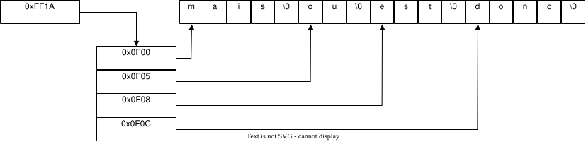
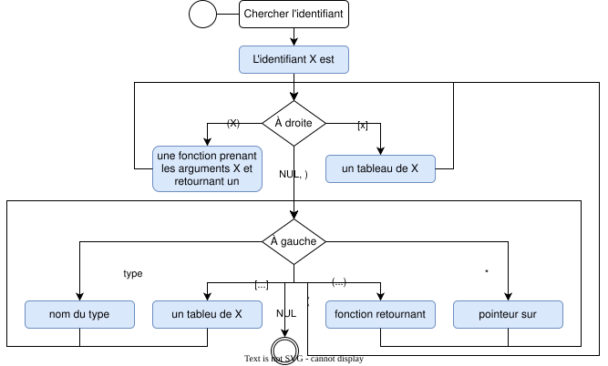

Pointeurs¤
Accrochez vos guidons : nous nous aventurons aujourd'hui sur un terrain délicat, subtil et parfois déroutant, mais ô combien fondamental pour quiconque souhaite maîtriser l'art de la programmation. Nous abordons un sujet central, quasiment incontournable : les pointeurs.
Les pointeurs sont des variables d'une nature singulière : au lieu de contenir directement une valeur, ils stockent une adresse mémoire. À quoi cela sert-il ? À introduire des indirections, à optimiser la gestion des données et à rendre l'exécution du code plus souple et plus efficiente.
Imaginons une scène tirée des intrigues galantes du XVIIIᵉ siècle. Le vicomte de Valmont, séducteur invétéré, rédige une missive enflammée à la marquise de Merteuil. Après l'avoir scellée avec soin, il la dépose dans sa boîte aux lettres en espérant que le facteur l'acheminera à bon port. Ce simple geste pourrait se traduire dans le langage des machines par la déclaration suivante :
Cette variable lettre est alors stockée en mémoire à une adresse spécifique, disons 0x12345abc, qui représenterait l'emplacement de la boîte du vicomte dans le vaste réseau qu'est la mémoire.
Le facteur, fidèle à son devoir mais pas à l'abri des aléas du quotidien, découvre avec horreur que la chaleur étouffante a fait fondre le sceau de cire, collant irrémédiablement la lettre au fond de la boîte. En tentant de la détacher, il la déchire et en révèle involontairement le contenu.
Cette pirouette n'est bien sûr qu'une métaphore destinée à illustrer qu'une valeur en mémoire ne se transporte pas aisément. Notre pauvre facteur, dont la mémoire n'est plus ce qu'elle était, décide de retenir laborieusement les premiers mots de la lettre : Chère Ma. Il enfourche alors son vélo tout nickelé, effectue un premier trajet et retranscrit ces quelques caractères dans la boîte de la marquise de Merteuil. L'opération se répète encore et encore jusqu'à ce que la lettre soit intégralement recopiée.
Nous obtenons alors une copie de la lettre dans la boîte de la Marquise :
Mais la chaleur persistante et les limites de cette méthode ne satisfont guère la marquise, qui décide de résoudre le problème en se rendant à Tarente – choix discutable en pleine canicule. Là-bas, elle grave sa réponse sur le mur sud du Castello Aragonese, prenant soin de noter avec précision les coordonnées GPS du mur : 0x8F313233 (en réalité 8FGMPXJ7+2V selon l'OLC).
De retour chez elle, elle confie au facteur l'adresse en mémoire (0x30313233), un renseignement que celui-ci, soulagé, peut enfin retenir sans effort.
Ainsi, la variable gps_position ne contient pas directement le message, mais uniquement l'adresse où celui-ci est stocké : c'est un pointeur vers un tableau de caractères.
Pendant ce temps, le vicomte, peu enclin aux efforts, s'est muni d'un téléscripteur capable d'interpréter le code C. En récupérant l'adresse fournie, il parvient à lire le message de la marquise :
S'il avait omis l'astérisque (*, 002A) dans cette ligne, il n'aurait vu que 0123, c'est-à-dire l'adresse elle-même, au lieu du message qu'elle désigne.
L'astérisque joue donc un rôle essentiel : celui du déréférencement, autrement dit l'action qui consiste à demander au facteur d'aller chercher le contenu à l'adresse spécifiée.
Mais pourquoi avoir utilisé l'esperluette (&, 0026) pour obtenir cette adresse &castello_wall ? Placée devant une variable, l'esperluette signifie l'adresse de cette variable, tout comme la marquise avait relevé la position GPS du mur.
Quant à l'astérisque dans (*gps_position)[], il ne déclenche pas un déréférencement dans ce contexte : il participe à la déclaration du pointeur. C'est souvent à ce stade que les débutantes et débutants se perdent ; revenons donc à l'essentiel.
En C, l'astérisque peut signifier plusieurs choses :
- Multiplication :
a * b, - Déréférencement d'un pointeur :
*ptr, - Déclaration d'un pointeur :
int *ptr.
Dans notre cas, nous déclarons un pointeur. En appliquant la règle de lecture gauche-droite :
char (*gps_position)[]
^^^^^^^^^^^^ 1. gps_position est
^ 2. ...
^ 3. un pointeur sur
^^ 4. un tableau de
^^^^ 5. caractères
6. PROFIT...
En résumé :
- Un pointeur est une variable.
- Il contient une adresse mémoire.
- Il peut être déréférencé pour obtenir la valeur de l'élément pointé.
- L'adresse d'une variable peut être obtenue avec une esperluette (
&).
Ainsi, nous voyons que les pointeurs, loin d'être une simple abstraction technique, peuvent se révéler de précieux alliés dans l'écriture d'un code à la fois efficace et élégant.
Pointeur simple¤
Le format le plus simple d'un pointeur sur un entier s'écrit avec l'astérisque * :
La valeur NULL correspond à l'adresse nulle 0x00000000. On utilise cette convention et non 0 pour bien indiquer qu'il s'agit d'une adresse et non d'une valeur scalaire.
nul, null, nulll
Attention à l'écriture de NULL :
nulest le caractère de fin de chaîne de caractères'\0';nullest une adresse qui pointe nulle part ;nulllveut dire que vous avez fait une faute de frappe.
À tout moment, la valeur du pointeur peut être assignée à l'adresse d'un entier puisque nous avons déclaré un pointeur sur un entier. Dans l'exemple suivant, deux variables boiling et freezing sont déclarées et un pointeur ptr est assigné soit à l'adresse l'une, soit à l'autre selon que i est pair ou impair :
int boiling = 100;
int freezing = 0;
for (char i = 0; i < 10; i++) {
int *ptr = i % 2 ? &boiling : &freezing;
printf("%d", *ptr);
}
Lorsque nous avions vu les tableaux, nous écrivions pour déclarer un tableau d'entiers la notation ci-dessous :
Vous ne le saviez pas, mais 𝄽 plot twist 𝄽 la variable array est un pointeur, et la preuve est que array peut être déréférencé :
La différence entre un tableau et un pointeur est la suivante :
- Il n'est pas possible d'assigner une adresse à un tableau
- Il n'est pas possible d'assigner des valeurs à un pointeur
D'ailleurs, l'opérateur crochet [] n'est rien d'autre qu'un sucre syntaxique et les deux codes suivants sont équivalents :
Par ailleurs, et bien que ce soit une très mauvaise idée, il est tout à fait possible d'écrire le code suivant puisque l'addition est commutative :
Asterix de gauche ou de droite ?
Lors de la déclaration d'un pointeur, l'astérisque peut être placé à gauche ou à droite du type. Les déclarations suivantes sont équivalentes :
Néanmoins il est recommandé de placer l'astérisque à droite du type pour éviter toute confusion. En effet, lorsque vous utilisez l'opérateur virgule , pour déclarer plusieurs variables, il est facile de penser que int* a, b; déclare deux pointeurs, alors qu'en réalité seul a est un pointeur.
Déréférencement et adresse¤
Avec les pointeurs, certains opérateurs sont recyclés pour de nouvelles fonctions. C'est déroutant au début mais le nombre de caractère spéciaux dans la table ASCII étant limité, il faut bien faire avec. Dans le cas précis des pointeurs deux opérateurs sont à connaître :
| Opérateur | Description |
|---|---|
* |
Déréférencement |
& |
Adresse d'une variable |
Adresse d'une variable¤
L'opérateur & utilisé comme opérateur unaire permet d'obtenir l'adresse mémoire d'une variable. C'est-à-dire que si a est une variable, &a est l'adresse mémoire de cette variable. Par exemple :
Ici le %p est un format de chaîne de caractères pour afficher une adresse mémoire. L'adresse mémoire est affichée en hexadécimal. Par exemple 0x12345678. On pourrait aussi écrire de manière équivalente :
Le type uintptr_t est un type entier non signé qui est assez grand pour contenir une adresse mémoire. Il est défini dans le fichier d'en-tête stdint.h et il est généralement défini comme un alias pour unsigned long. Il est utilisé généralement pour faire un cast d'une adresse mémoire en un entier.
Déréférencement¤
Le déréférencement correspond à l'opération de lecture de la valeur pointée par un pointeur. C'est-à-dire que si ptr est un pointeur sur un entier, *ptr est la valeur de cet entier. Dit autrement, si vous avez un post-it avec l'adresse d'un magasin de chaussures, la simple possession de ce post-it ne vous permet pas d'avoir de nouvelles chaussures. Il vous faut vous rendre à l'adresse indiquée pour obtenir les chaussures. C'est exactement ce que fait l'opérateur *.
char* shoe = "Nike Mag";
printf("%p", shoe); // Affiche d'une chaussure (p.ex. 0x12345678)
printf("%s", *shoe); // Affiche la chaussure (c-à-d. Nike Mag)
Amusons-nous. Prenons le post-it de l'exemple précédent et décidons de le déchirer et allons le cacher quelque part. Prenons l'adresse de cet emplacement et écrivons-la sur un nouveau post-it. Nous avons maintenant un post-it avec l'adresse d'un post-it qui contient l'adresse d'un magasin de chaussures. Pour obtenir les chaussures, il nous faut déréférencer deux fois :
char *shoe = "Nike Mag";
char **p = &shoe;
printf("%s", **p); // Affiche la chaussure (c-à-d. Nike Mag)
Cette opération est appelée déréférencement multiple. Elle peut être répétée autant de fois que nécessaire :
int a = 42;
int *b = &a;
int **c = &b;
int ***d = &c;
int ****e = &d;
printf("%d", ****e); // Affiche 42
printf("%d", ***d); // Affiche 42
printf("%d", **c); // Affiche 42
printf("%d", *b); // Affiche 42
printf("%d", a); // Affiche 42
Comme l'opération & et la réciproque de l'opération *, il est possible de les combiner :
Arithmétique de pointeurs¤
Fondamentalement un pointeur n'est rien d'autre qu'une variable qui contient une adresse mémoire. Dès lors on peut imaginer vouloir incrémenter cette adresse pour révéler la valeur suivante en mémoire. On dit qu'un pointeur est un ordinal.
Dans l'exemple suivant, la boucle for affiche les caractères de la chaîne de caractères str jusqu'à ce qu'il rencontre le caractère nul '\0' :
char str[] = "Le vif zéphyr jubile sur les kumquats du clown gracieux";
for (char* ptr = str; *ptr; ptr++) { putchar(*ptr); }
En pratique cette écriture serait plus élégante avec une boucle while car le nombre d'itération est inconnu : il dépend de la longueur de la chaîne de caractères. On préfère donc :
Si nous devions nous arrêter à cette étape, il serait tentant de croire que l'arithmétique des pointeurs se réduit à une simple incrémentation de l'adresse mémoire de 1 octet à chaque étape. Cependant, la réalité est autrement plus nuancée. Vous êtes-vous jamais interrogé sur la raison pour laquelle un pointeur est toujours associé à un type, tel qu’un int ou un char ? Après tout, stocker une adresse mémoire ne requiert pas, en soi, de connaître la nature de l'information qu'elle désigne. Cette association répond pourtant à deux exigences fondamentales.
Assistance au compilateur : Le compilateur, pour produire le code machine approprié, doit impérativement connaître le type de la variable pointée. En effet, il doit savoir combien d'octets lire en mémoire pour obtenir la valeur lors d'un déréférencement. Ainsi, lorsqu’un pointeur désigne un double, le compilateur sait qu’il devra lire 8 octets en mémoire pour restituer la valeur.
Arithmétique des pointeurs : Pour garantir une arithmétique cohérente, celle-ci est définie en fonction du type du pointeur. Si ptr pointe vers un entier, l'opération ptr++ n'incrémente pas simplement l'adresse d’un octet, mais bien de sizeof(int) octets. De même, l'expression ptr + 2 augmente l'adresse de 2 * sizeof(int) octets.
Ainsi, selon le type du pointeur, l'arithmétique des pointeurs s'ajuste :
int32_t *p = (int32_t *)1;
assert(p + 2 == (int32_t *)9);
int64_t *q = (int64_t *)1;
assert(q + 2 == (int64_t *)17);
Il convient de souligner que l'arithmétique des pointeurs se limite aux opérations d'addition et de soustraction. Les autres opérations arithmétiques, telles que la multiplication ou la division, ne sont pas définies pour les pointeurs.
Carré magique¤
Prenons un autre exemple. Imaginons que l'on souhaite représenter le carré magique suivant :
On peut le représenter en mémoire linéairement et utiliser de l'arithmétique de pointeur pour le dessiner. C'est-à-dire qu'il n'est pas nécessaire de déclarer explicitement un tableau à deux dimensions. On peut le représenter de la manière suivante :
char magic[] = "492" "357" "816"; // Équivalent à "492357816"
char *ptr = magic;
for (size_t row = 0; row < 3; ++row) {
for (size_t col = 0; col < 3; ++col)
putchar(*(ptr + row * 3 + col));
putchar('\n');
}
Vous l'arez probablement remarqué l'écriture *(ptr + row * 3 + col) est équivalente à ptr[row * 3 + col]. Néanmoins pour pouvoir utiliser la notation bidiensionnelle, le compilateur doit connaître la taille de la deuxième dimension, et celle-ci n'est pas explicitement déclarée. Si vous préférez la notation traditionnelle, l'exemple suivant est équivalent à celui ci-dessus :
char magic[][3] = {"792", "357", "816"};
for (size_t row = 0; row < 3; row++) {
for (size_t col = 0; col < 3; col++)
putchar(magic[row][col]);
putchar('\n');
}
On peut pousser l'exemple plus loin. Imaginons que vous avez des données en mémoires, agencées linéairements, mais que vous ne connaissez pas à priori la taille de la matrice, c'est le cas de la déclaration char magic[] = "492357816";. Dans ce cas, seul la première solution est envisageable. Cependant, la seconde est bien plus élégante et plus lisible. Peut-on avoir le beurre et l'argent du beurre ? Oui, avec un peu de ruse.
On peut déclarer un nouveau pointeur de type tableau à deux dimensions et le caster sur le pointeur magic. C'est-à-dire que l'on va dire au compilateur que le pointeur magic est en réalité un tableau à deux dimensions. C'est une pratique courante en C.
#include <stdio.h>
#include <stdlib.h>
#include <stdint.h>
#include <assert.h>
#include <string.h>
char *magic = "492357816";
const int size = 3;
int main() {
assert(strlen(magic) == size * size);
char(*p)[size] = (char(*)[size])magic;
for (size_t row = 0; row < 3; row++) {
for (size_t col = 0; col < 3; col++)
putchar(p[row][col]);
putchar('\n');
}
}
Tentons de décortiquer la déclaration ambiguë :
char // Type du pointeur
(*p) // Déclaration du pointeur
[size] // Tableau de taille size
=
(char
(*)
[size]) // Identique mais via un cast
magic;
Aprpès l'assignation =, on a simplement le même type permettant de transtyper le pointeur magic vers le type souhaité. C'est nécessaire pour éviter que le compilateur ne génère une alterte indiquant qu'un pointeur d'un certain type soit assigné à un pointeur d'un autre type. Dans le cast, le nom de la variable p est simplement ignoré.
Avant l'assignation, la déclaration compliquée à comprendre est la parenthèse (*p)[size]. En effet, le compilateur ne sait pas si *p[size] est un tableau de pointeurs ou un pointeur sur un tableau. Il est donc nécessaire de placer des parenthjsons pour indiquer que *p est un pointeur sur un tableau de taille size. Rappelez-vous de la priorité des opérateurs en C. L'opérateur crochet [] a une priorité plus élevée que l'opérateur astérisque *. Donc :
char *p[size]; // Tableau de taille size sur des pointeurs de type char
char (*p)[size]; // Pointeur sur un tableau de char de taille size
Pour terminer l'exemple, on peut mentionner que l'on peut simplifier l'écriture en s'affranchissant du pointeur intermédiaire. On peut directement caster le pointeur magic dans la boucle for :
Cas d'un tableau¤
Cela n'aura plus de secret pour vous, un tableau est un pointeur. Néanmoins il existe quelques subtilités. D'une part un tableau est un pointeur constant, c'est-à-dire que l'adresse mémoire ne peut être modifiée. L'écriture suivante est donc incorrecte :
Prenons le cas d'un tableau à deux dimensions :
On peut résumer les types de pointeurs associés à chaque élément de ce tableau :
| Déclaration | Type du pointeur | Description |
|---|---|---|
array |
int (*)[3] |
Pointeur sur un tableau de 3 entiers |
&array |
int (*)[3][3] |
Pointeur sur un tableau de 3 tableaux de 3 entiers |
array[0] |
int * |
Pointeur sur un entier |
array[0][0] |
int |
Entier |
Vous avez constaté lors de l'exemple du carré magique qu'il n'était pas possible d'écrire magic[row][col] à partir de la déclaration de pointeur char *magic car le compilateur ne connaissait pas la taille de la deuxième dimension. Dans le cas d'une déclaration de type int (*)[3] le compilateur sait que la deuxième dimension est de taille 3. On peut donc écrire array[row][col] sans problème.
L'écriture &array mérite une explication. En effet, &array est un pointeur sur un tableau de 3 tableaux de 3 entiers. C'est-à-dire que &array est équivalent à int (*)[3][3]. C'est une subtilité de la syntaxe C. En effet, &array est l'adresse du tableau array qui est un tableau de 3 tableaux de 3 entiers, alors que array est simplement un pointeur sur un tableau de 3 entiers. Pourquoi cette subtilité ?
Lorsque l'on utilise des pointeurs, l'objectif est d'utiliser l'arithmétique de pointeurs pour parcourir les données en mémoire. Donc pour un tableau on s'attend à ce qu'ajouter une unité au pointeur nous mène à la valeur suivante. Pour le cas int array[3][3], ajouter une unité au pointeur array nous mène à la première valeur du tableau suivant. C'est-à-dire que array + 1 pointe sur le tableau array[1] et array + 2 pointe sur le tableau array[2], ce qui confirme le sucre syntaxique de l'opérateur crochet [] qui est équivalent à l'arithmétique de pointeur *(array + i).
Néanmoins si on considère l'entièreté de array et que l'on souhaite avec +1 aller après le dernier élément du tableau, il est nécessaire de connaître la taille totale du tableau c'est-à-dire 9 éléments. Demander explicitement l'adresse de array retourne un pointeur sur un tableau de 3 tableaux de 3 entiers. C'est-à-dire que &array + 1 pointe sur le tableau suivant de 3 tableaux de 3 entiers, car on pourrait très bien imaginer array comme un élément d'un tableau plus grand :
int matrices[2][3][3] = {
{{4, 9, 2},
{3, 5, 7},
{8, 1, 6}},
{{1, 2, 3},
{4, 5, 6},
{7, 8, 9}}};
int(*array)[3][3] = &(matrices[0]); // Parenthèses facultatives [] > &
Résumé¤
L'arithmétique de pointeur est donc chose courante avec les tableaux. À vrai dire, les deux concepts sont interchangeables :
| Élément | Premier | Deuxième | Troisième | n ième |
|---|---|---|---|---|
| Accès tableau | a[0] |
a[1] |
a[2] |
a[n - 1] |
| Accès pointeur | *a |
*(a + 1) |
*(a + 2) |
*(a + n - 1) |
De même, l'exercice peut être répété avec des tableaux à deux dimensions :
| Élément | Premier | Deuxième | n ligne m colonne |
|---|---|---|---|
| Accès tableau | a[0][0] |
a[1][1] |
a[n - 1][m - 1] |
| Accès pointeur | *(*(a+0)+0) |
*(*(a+1)+1) |
*(*(a+i-1)+j-1) |
Chaînes de caractères¤
Les chaînes de caractères sont des tableaux de caractères terminés par un caractère nul '\0'. Il est donc possible de déclarer une chaîne de caractères de la manière suivante :


Dans ce cas, les chaînes "mais", "ou"... sont des constantes littérales de type const char*. Elles sont stockées dans un segment de mémoire en lecture seule. Le tableau conjonctions est donc un tableau de pointeurs sur des chaînes de caractères.
Cette structure est très exactement la même que pour les arguments transmis à la fonction main : la définition char *argv[].
On se retrouve donc avec une indirection sur un tableau de pointeurs. Pour accéder à un élément de la chaîne de caractères, on utilisera l'opérateur crochet []. Il faut noter que dans ce cas, rien ne garanti que les éléments soient contigus en mémoire. Considérons l'exemple suivant :
char *a = "mais";
char *b = "ou";
char *c = "est";
char *d = "donc";
char *e = "or";
char *f = "ni";
char *g = "car";
char *conjonctions[] = {a, b, c, d, e, f, g};
Chaque variable a à g sont des pointeurs sur des chaînes de caractères mais vous ne savez pas nécessairement où elles sont stockées en mémoire.
On est en droit de se demander quel est l'avantage de passer par des pointeurs, on pourrait très bien déclarer le tableau de conjonctions comme un char conjonctions[][5] et avoir ceci :
Néanmoins dans ce cas, de l'espace mémoire est gaspillé car chaque chaîne de caractères doit avoir la même taille, et pour déclarer le tableau il faut connaître la taille de la plus grande chaîne de caractères. En revanche cette méthode permet de réduire le niveau d'imbrication. Il n'y a plus de tableau intermédiaire de pointeurs.
Structures¤
Les pointeurs peuvent bien entendu être utilisés avec n'importe quel type de données. Les structures ne font pas exception à la règle. On peut définir une structure de données et déclarer un pointeur sur cette structure :
typedef struct Date {
unsigned char day;
unsigned char month;
unsigned int year;
} Date;
Date date;
Date *p; // Pointeur sur un type Date
p = &date; // Assignation de l'adresse de date à p
Le pointeur reste un pointeur, soit un espace mémoire qui contient une adresse vers la structure Date. En conséquence, la taille de ce pointeur est de 8 bytes sur une machine LP64 (64 bits) :
Le langage C introduit un autre sucre syntaxique pour déréférencer un élément d'une structure. En effet, il est possible d'écrire p->day pour accéder au champ day de la structure pointée par p. C'est équivalent à (*p).day :
Ajoutons que concernant l'arithmétique de pointeur, il est important de noter que l'opération p + 1 incrémente le pointeur de sizeof(Date) bytes. C'est-à-dire que p + 1 pointe sur la structure suivante de type Date. On peut donc avoir un tableau de structures de la manière suivante :
#define MAX 10
Date dates[MAX];
Date *p = dates;
for (size_t i = 0; i < MAX; i++) {
p->day = i;
p->month = i;
p->year = 2021 + i;
p++;
}
Cette écriture est déroutante et peut être une cause fréquente de trichotillomanie (arrachement de cheveux). Prenons l'exemple de deux fonctions, l'une prenant un pointeur vers une date et l'autre une structure date :
void print_date1(Date *date) {
printf("%d/%d/%d\n", date->day, date->month, date->year);
}
void print_date2(Date date) {
printf("%d/%d/%d\n", date.day, date.month, date.year);
}
Lorsque vous décidez de modifier le type de l'argument de la fonction vous devez ajuster les déréférencements. C'est-à-dire que si vous décidez de passer de Date à Date* vous devez modifier . en -> et vice versa. En pratique il est toujours préférable de passer par des pointeurs pour éviter de copier des structures sur la pile. Pour éviter de les modifier, il est possible de déclarer les structures comme const :
Structure récursive¤
Lorsqu'on utilise des structures de données plus complexes comme les listes chaînées, on a besoin de créer une structure contenant des données ainsi qu'un pointeur sur l'élémnent suivant. On peut définir une structure récursive de la manière suivante :
typedef struct Element {
struct Element *next; // Pointeur sur l'élément suivant
unsigned long data; // Donnée
} Element;
Exemple d'utilisation :
Element e[3];
// Premier élément de la liste
e[0].prev = NULL;
e[0].next = &e[1];
// Second élément de la liste
e[1].prev = &e[0];
e[1].next = &e[2];
// troisième élément de la liste
e[2].prev = &e[1];
e[2].next = NULL;
On peut parcourir cette liste de la manière suivante :
En effet, tant que le pointeur n'est pas NULL, on peut continuer à parcourir la liste. Le dernier élément de la liste pointe sur NULL qui fait office de valeur sentinelle pour indiquer la fin de la liste.
Les structures récursives sont très utilisées en informatique pour représenter des données hiérarchiques. Nous verrons plus tard les notions d'arbres et de graphes qui reposent sur ce concept.
Arguments de fonctions¤
Lors de l'introduction aux fonctions nous avons vu que ces dernières peuvent recevoir des arguments. Ces arguments peuvent être de n'importe quel type, y compris des pointeurs et dans de nombreux cas de figure le passage par pointeur est préférable. Voici quelques cas de figure où le passage par pointeur est recommandé :
Modification de la valeur d'une variable dans une fonction
void increment(int *a) {
(*a)++;
}
int main() {
int a = 0;
increment(&a);
printf("%d\n", a); // Affiche 1
}
Le cas le plus notable est celui de la fonction scanf qui modifie la valeur de la variable passée en argument. En effet, scanf attend un pointeur sur la variable à modifier. Jusqu'ici nous vous avions expliqué qu'il faut toujours utiliser l'esperluette & lors de l'utilisation de scanf. Maintenant vous savez que & est nécessaire car scanf attend un pointeur puisque cette fonction modifie la valeur de la variable passée en argument.
Eviter la copie de données
Dans certains cas de figure, les données passées en argument à une fonction peuvent être très grandes et elles sont copiées sur la pile à chaque appel. C'est le cas pour les structures. Considérons la structure suivante :
Si la structure Data est très grande, lors de l'appel d'une fonction la structure sera copiée intégralement sur la pile à chaque appel. En revanche, si on passe un pointeur seul l'adresse de la structure sera copiée. En pratique on préfèrera toujours passer des pointeurs pour les structures :
process(struct Data data) // Copie sur la pile
process(struct Data *data) // Passage par référence (adresse)
Plusieurs valeurs de retour¤
Lorsqu'une fonction doit retourner plusieurs valeurs, il est possible de passer des pointeurs en argument pour stocker les valeurs de retour. Par exemple la fonction compute retourne un statut d'exécution et une valeur calculée :
On observe qu'il faut déréférencer le pointeur result pour modifier la valeur de la variable pointée. On peut appeler cette fonction de la manière suivante :
double result = 4823.;
int status = compute(0, &result);
if (status == 0) {
printf("Result: %f\n", result);
} else {
printf("Error: Division by zero\n");
}
Transtypage (cast)¤
Nous avons expliqué plus haut qu'un pointeur est généralement associé à un type permettant l'arithmétique de pointeurs. Néanmoins il existe un cas particulier, celui du type void. Un pointeur sur void est un pointeur neutre, c'est-à-dire qu'il peut pointer sur n'importe quel type de données. Comme le type n'est pas connu, l'arithmétique de pointeurs n'est pas possible. Il est nécessaire alors de transtyper le pointeur pour pouvoir l'utiliser.
La fonction memcpy est un exemple typique de l'utilisation de pointeurs sur void. Cette fonction permet de copier une région mémoire vers une autre. Elle est déclarée de la manière suivante :
Elle peut être appelée avec n'importe quel type de données. Par exemple pour copier un tableau d'entiers, une structure ou même un tableau de structures. En spécifiant le type explicite du pointeur, il faudrait autant de fonctions memcpy que de type possible, ce qui n'est ni raisonnable, ni même imaginable. Face à ce dilemme, on utilise un pointeur neutre. Considérons ces différents types :
char message[] = "Mind the gap, please!";
int array[128];
struct { int a; char b; float c[3] } elements[128];
On peut assigner l'adresse de ces variables à un pointeur void mais on perd au passage l'arithmétique de pointeurs :
Ce pointeur neutre peut ensuite être transtypé pour être utilisé. La clé est dans le standard ISO/IEC 9899:2011 section 6.3.2.3 page 55 :
A pointer to void may be converted to or from a pointer to any object type. A pointer to any object type may be converted to a pointer to void and back again ; the result shall compare equal to the original pointer.
Autrement dit, il n'est pas nécessaire ni recommandé de faire un transtypage explicite pour convertir vers et en provenance d'un pointeur sur void. Et donc, l'astuce de memcpy est que la fonction accepte n'importe quel type de pointeur. Et quant à l'implémentation de cette fonction me direz-vous ? Une possibilité serait :
void memcpy(void *dest, void *src, size_t n)
{
char* csrc = src;
char* cdest = dest;
for (size_t i = 0; i < n; i++)
cdest[i] = csrc[i];
}
Où plus concis :
void memcpy(void *dest, void *src, size_t n)
{
for (size_t i = 0; i < n; i++)
((char*)dst)[i] = ((char*)src)[i];
}
En réalité ce n'est pas la façon dont memcpy est implémentée. En effet, cette fonction est très utilisée et doit être extrêmement performante. Il est donc nécessaire de tenir compte de l'architecture du processeur et de la taille des données à copier. L'implémentation de memcpy est une affaire de cuisine interne du compilateur. L'implémentation dépend donc de l'architecture cible et doit tenir compte des éventuels effets de bords. Par exemple s'il faut copier un tableau de 9 x 32 bits. Une architecture 64-bits aura une grande facilité à copier les 8 premiers octets, mais quant au dernier, il s'agit d'un cas particulier. Vous êtes comme Thomas l'apôtre, et ne me croyez pas ? Alors, digressons et essayons :
#include <string.h>
#include <stdio.h>
int main(void)
{
char a[] = "La Broye c'est fantastique!";
char b[sizeof(a)];
memcpy(a, b, sizeof(a));
printf("%s %s", a, b);
}
En observant l'assembleur créé à la compilation (avec gcc -S -O3), on peut voir que la copie est effectuée en 6 instructions. Par ailleurs, il n'y a aucun appel de fonction à memcpy comme c'est le cas pour printf (bl printf). Voici le code assembleur généré :
main :
// Entry
str lr, [sp, #-4]!
sub sp, sp, #60
// Inline memcpy
mov ip, sp // Destination address
add lr, sp, #28 // Source address (char b located 28 octets after a)
ldmia lr!, {r0, r1, r2, r3} // Load 4 x 32-bits
stmia ip!, {r0, r1, r2, r3} // Store 4 x 32-bits
ldm lr, {r0, r1, r2} // Load 3 x 32-bits
stm ip, {r0, r1, r2} // Store 3 x 32-bits
// Display (printf)
add r2, sp, #28
mov r1, sp
ldr r0, .L4
bl printf
// Exit
mov r0, #0
add sp, sp, #60
ldr pc, [sp], #4
.L4 :
.word .LC0
.LC0 :
.ascii "La Broye c'est fantastique!\000"
Vous pouvez jouer avec cet exemple sur le site godbolt.
Arithmétique et void*
Prenons l'exemple suivant :
Formellement ceci devrait mener à une erreur de compilation, car void n'a pas de substance, et donc aucune taille associée. Néanmoins gcc est très permissif de base et (à ma grande surprise), il ne génère par défaut ni warning, ni erreurs sans l'option -Wpointer-arith.
En compilant ce code avec gcc -Wall -Wextra -pedantic on obtient :
Néanmoins sans l'option -Wpointer-arith aucune erreur n'est générée. C'est pourquoi il est recommandé de toujours compiler avec les options -Wall -Wextra -pedantic pour obtenir un code plus robuste.
Exercice 102 : Void*
Que pensez-vous que sizeof(void*) devrait retourner sur une architecture 64-bits ?
- 1
- 2
- 4
- 8
- 0
Solution
Un pointeur reste un pointeur, c'est une variable qui contient une adresse mémoire. Sur une architecture 64-bits, un pointeur est codé sur 8 bytes. sizeof(void*) retourne donc 8.
Pointeurs de fonctions¤
Un pointeur peut pointer n'importe où en mémoire, et donc il peut également pointer non pas sur une variable, mais sur une fonction. Les pointeurs de fonctions sont très utiles pour des fonctions de rappel (callback).
Par exemple si on veut appliquer une transformation sur tous les éléments d'un tableau, mais que la transformation n'est pas connue à l'avance. On pourrait alors écrire :
int is_odd(int n) {
return !(n % 2);
}
void map(int array[], int (*callback)(int), size_t length) {
for (size_t i = 0; i < length; i++)
array[i] = callback(array[i]);
}
void main(void) {
int array[] = {1,2,3,4,5};
map(array, is_odd);
}
Avec la règle gauche droite, on parvient à décortiquer la déclaration :
int (*callback)(int)
^^^^^^^^ callback est
^
^ un pointeur sur
^^^^^ une function prenant un int
^^^ et retournant un int
Les pointeurs de fonctions sont beaucoup utilisés en programmation fonctionnelle. Ils permettent de passer des actions en argument à d'autres fonctions. Par exemple la fonction qsort de la bibliothèque standard C permet de trier un tableau. Elle prend en argument un pointeur sur le tableau à trier, le nombre d'éléments, la taille d'un élément et une fonction de comparaison.
Cette fonction de comparaison est un pointeur sur une fonction qui prend deux éléments et retourne un entier négatif si le premier est inférieur au second, zéro s'ils sont égaux et un entier positif si le premier est supérieur au second.
int compare(const void *a, const void *b) {
return (*(int*)a - *(int*)b);
}
int main(void) {
int array[] = {3, 1, 4, 1, 5, 9, 2, 6, 5, 3, 5};
qsort(array, sizeof(array) / sizeof(array[0]), sizeof(array[0]), compare);
}
Les pointeurs de fonctions sont également utilisés pour effectuer des opérations différentes selon des critères. Admettons que l'on souhaite réaliser un parseur d'expressions mathématiques en format infixé. C'est-à-dire que les opérateurs sont placés après les nombres. 2+3*8-2 s'écrirait 238*+2-.
Les opérateurs selon la table ASCII sont + (43), - (45), * (42) et / (47). Un tableau de correspondance peut être créé pour associer un opérateur à une fonction :
#include <stdio.h>
#include <stdlib.h>
void display(double a, double b, char op) {
printf("%f %c %f\n", a, op, b);
}
double add(double a, double b) { display(a, b, '+'); return a + b; }
double sub(double a, double b) { display(a, b, '-'); return a - b; }
double mul(double a, double b) { display(a, b, '*'); return a * b; }
double divide(double a, double b) { display(a, b, '/'); return a / b; }
double (*operations[])(double, double) = {
/* 42 */ mul, // *
/* 43 */ add, // +
/* 44 */ NULL, // ,
/* 45 */ sub, // -
/* 46 */ mul, // .
/* 47 */ divide // /
};
int parse(char *expression) {
int stack[128];
int top = -1;
while (*expression) {
const char c = *expression;
if (c >= '0' && c <= '9')
stack[++top] = (double)(c - '0');
else if (top > 0 && c >= '*' && c <= '/') {
const int index = c - '*';
int a = stack[top--], b = stack[top--];
stack[++top] = operations[index](b, a);
}
else {
printf("Invalid expression (stack: %d)\n", top);
exit(EXIT_FAILURE);
}
expression++;
}
return stack[top];
}
int main(void) {
char expression[] = "238*+4-";
printf("%d\n", parse(expression));
}
Le programme ci-dessus affiche :
La règle gauche-droite¤
Cette règle est une recette magique permettant de correctement décortiquer une déclaration C contenant des pointeurs. Il faut tout d'abord lire :
| Symbole | Traduction | Direction |
|---|---|---|
* |
pointeur sur |
Toujours à gauche |
[] |
tableau de |
Toujours à droite |
() |
fonction retournant |
Toujours à droite |
- Première étape
-
Trouver l'identifiant et se dire
L'identifiant est. - Deuxième étape
-
Chercher le symbole à droite de l'identifiant. Si vous trouvez un
(), vous savez que cet identifiant est une fonction et vous avez L'identifiant est une fonction retournant. Si vous trouvez un[]vous dites alors L'identifiant est un tableau de. Continuez à droite jusqu'à ce que vous êtes à court de symboles, OU que vous trouvez une parenthèse fermante). - Troisième étape
-
Regardez le symbole à gauche de l'identifiant. S’il n'est aucun des symboles précédents, dites quelque chose comme
int. Sinon, convertissez le symbole en utilisant la table de correspondance. Continuez d'aller à gauche jusqu'à ce que vous êtes à court de symboles OU que vous rencontrez une parenthèse ouvrante(. - Ensuite...
-
Continuez les étapes 2 et 3 jusqu'à ce que vous avez une déclaration complète.
Cet algorithme peut être représenté par le diagramme suivant :


Voici quelques exemples :
-
Trouver l'identifiant :
p:p est -
Se déplacer à droite :
p est un tableau de -
Se déplacer à gauche :
p est un tableau de pointeurs sur -
Continuer à gauche :
p est un tableau de pointeurs sur un int
cdecl¤
Il existe un programme nommé cdecl qui permet de décoder de complexes déclaration c :
$ cdecl 'char (*(*x[3])())[5]'
declare x as array 3 of pointer to function returning pointer to array 5 of char
Une version en ligne est également disponible.
Manuellement cette déclaration serait :
char (*(*foo[3])())[5]
^^^ L'identifiant `foo` est
^^^ un tableau de 3
^ < pointeurs sur
> ^^ une fonction prenant les arguments `` et retournant un
* < pointeur sur
> ^^^ un tableau de 5
^^^^ < char
Implémentation¤
Pour l'exemple, voici une implémentation très rudimentaire de cdecl. Elle n'est pas complète mais elle donne le principe de fonctionnement :
#include <ctype.h>
#include <stdbool.h>
#include <stdio.h>
#include <stdlib.h>
#include <string.h>
int is_type(char *str) {
const char *type[] = {"int", "char", "short", "long",
"float", "double", "void"};
const int n = sizeof(type) / sizeof(type[0]);
for (int i = 0; i < n; i++) {
const int len = strlen(type[i]);
if (strncmp(str, type[i], len) == 0) return len;
}
return 0;
}
char *find_identifier(char *decl, size_t *len) {
// Find first string that is not a type
while (*decl) {
if (isalpha(*decl)) {
int len = is_type(decl);
if (len) {
decl += len;
continue;
}
break;
}
decl++;
}
// Find end of identifier and its length
char *c = decl;
while (isalnum(*c) || *c == '_') c++;
*len = c - decl;
return decl;
}
char *explore_right(char *right) {
while (*right && *right != ')') {
if (*right == '[') {
right++;
printf("un tableau de ");
while (*right != ']') {
putchar(*right++);
}
putchar(' ');
} else if (*right == '(') {
right++;
printf("une fonction aux arguments '");
while (*right != ')') putchar(*right++);
printf("' et retournant un ");
}
right++;
}
return right;
}
char *explore_left(char *left, char *start) {
while (left >= start && *left != '(') {
if (*left == '*') printf("pointeur sur ");
if (*left == ']') {
printf("un tableau de ");
while (left >= start && *left != '[') left--;
}
if (*left == ')') {
printf("une fonction retournant ");
while (left >= start && *left != '(') left--;
} else if (isalpha(*left)) {
int len = 0;
while (left >= start && isalpha(*left)) {
left--;
len++;
}
printf("%.*s ", len, left + 1);
}
left--;
}
return left;
}
void cdecl(char *decl) {
// Step 1 : Find identifier
size_t len;
char *left = find_identifier(decl, &len);
printf("L'identifiant '%.*s' est ", (int)len, left);
// Step 2 and 3 : Explore right and left
char *right = left + len;
left--;
do {
right = explore_right(right) + 1;
left = explore_left(left, decl) - 1;
} while (left > decl && *right);
putchar('\n');
}
int main() { cdecl("char (*(*foo[3])(int a))[5]"); }
Les améliorations sur ce code seraient :
- Gérer les erreurs de syntaxe (parenthèses manquantes, etc.)
- Afficher les arguments et la taille des tableaux en explorant à gauche
- Gérer les pluriels (tableau, tableaux, etc.)
Initialisation par transtypage¤
L'utilisation de structure peut être utile pour initialiser un type de donnée en utilisant un autre type de donnée. Nous citons ici deux exemples.
Enchevêtrement ou Aliasing¤
Travailler avec les pointeurs demande une attention particulière à tous les problèmes d'alisasing dans lesquels différents pointeurs pointent sur une même région mémoire.
Mettons que l'on souhaite simplement déplacer une région mémoire vers une nouvelle région mémoire. On pourrait implémenter le code suivant :
void memory_move(char *dst, char*src, size_t size) {
for (int i = 0; i < size; i++)
*dst++ = *src++;
}
Ce code est très simple mais il peut poser problème selon les cas. Imaginons que l'on dispose d'un tableau simple de dix éléments et de deux pointeurs *src et *dst. Pour déplacer la région du tableau de 4 éléments vers la droite. On se dirait que le code suivant pourrait fonctionner :
┌─┬─┬─┬─┬─┬─┬─┬─┬─┬─┐
│0│1│2│3│4│5│6│7│8│9│
└─┴─┴─┴─┴─┴─┴─┴─┴─┴─┘
^*src ^*dst
┌─┬─┬─┬─┬─┬─┬─┐
│0│1│2│3│4│5│6│
└─┴─┴─┴─┴─┴─┴─┘
↓ ↓ ↓ ↓ ↓ ↓ ↓
┌─┬─┬─┬─┬─┬─┬─┬─┬─┬─┐
│0│1│2│0│1│2│3│4│5│6│
└─┴─┴─┴─┴─┴─┴─┴─┴─┴─┘
Naïvement l'exécution suivante devrait fonctionner, mais les deux pointeurs source et destination s'enchevêtrent et le résultat n'est pas celui escompté.
char array[10] = {0, 1, 2, 3, 4, 5, 6, 7, 8, 9};
char *src = &array[0];
char *dst = &array[3];
memory_move(b, a, 7);
┌─┬─┬─┬─┬─┬─┬─┬─┬─┬─┐
│0│1│2│3│4│5│6│7│8│9│ Tableau d'origine
└─┴─┴─┴─┴─┴─┴─┴─┴─┴─┘
┌─┬─┬─┬─┬─┬─┬─┬─┬─┬─┐
│0│1│2│0│1│2│0│1│2│0│ Opération avec `memory_move`
└─┴─┴─┴─┴─┴─┴─┴─┴─┴─┘
┌─┬─┬─┬─┬─┬─┬─┬─┬─┬─┐
│0│1│2│0│1│2│3│4│5│6│ Opération avec `memmove` (fonction standard)
└─┴─┴─┴─┴─┴─┴─┴─┴─┴─┘
Notre simple fonction de déplacement mémoire ne fonctionne pas avec des régions mémoires qui s'enchevêtrent. En revanche, la fonction standard memmove de <stdlib.h> fonctionne, car elle autorise, au détriment d'une plus grande complexité, de gérer ce type de situation.
Notons que sa fonction voisine memcpy ne dois jamais être utilisée en cas d'aliasing. Cette fonction se veut performante, c'est-à-dire qu'elle peut être implémentée en suivant le même principe que notre exemple memory_move. Le standard C99 ne définit pas le comportement de memcpy pour des pointeurs qui se chevauchent.
Double Pointeurs¤
Nous avons vu qu'un pointeur peut référencer un autre pointeur. Dans le langage C, il est courant de rencontrer des fonctions acceptant des double pointeurs, comme illustré ci-dessous :
Un double pointeur est, par définition, un pointeur qui pointe vers un autre pointeur. Ce mécanisme est particulièrement utile lorsqu'il s'agit de modifier la valeur d'un pointeur à l'intérieur d'une fonction. En effet, si une fonction reçoit un pointeur simple (int *ptr) en argument, la valeur de ce pointeur est copiée sur la pile, ce qui signifie que toute modification faite à ptr à l'intérieur de la fonction n'affectera pas le pointeur d'origine. À l'inverse, si la fonction reçoit un double pointeur (int **ptr), elle reçoit une copie de l'adresse du pointeur, ce qui permet de modifier directement la valeur du pointeur d'origine.
Pour illustrer cette notion, imaginons une analogie simple. Supposons que vous êtes un peintre, et que votre patron vous donne un post-it avec l'adresse d'une maison à peindre. En suivant cette adresse (en déréférençant le pointeur), vous pouvez vous rendre à la maison et la peindre (modifier la valeur pointée). Cependant, si vous constatez que l'adresse est incorrecte, vous pouvez rectifier l'information sur votre post-it, mais vous ne pouvez pas informer directement votre patron de cette correction, car vous ne modifiez pas le post-it qu'il possède.
En revanche, imaginez que votre patron vous donne un post-it où est inscrite l'adresse d'un autre post-it contenant l'adresse de la maison à peindre. Par exemple, il vous remet un post-it sur lequel est écrit : « L'adresse se trouve sur le post-it rose collé sur la vitre de la vitrine de gauche dans mon bureau. » Si vous constatez une erreur, vous pouvez vous rendre dans le bureau de votre patron, corriger l'adresse sur le post-it rose, et ainsi, à son retour, il aura accès à la bonne information. Cette situation reflète exactement l'utilité d'un double pointeur en C.
Dans le code, cela pourrait se traduire ainsi :
void painter(House **address) {
if (!is_correct(*address))
*address = get_new_address(); // Modification de l'adresse pointée
paint(*address); // Peindre la maison à l'adresse correcte
}
int main(void) {
House *address = get_address(); // Obtenir l'adresse initiale
painter(&address); // Le patron transmet l'adresse du post-it
}
Cas d'utilisation¤
Les double pointeurs sont employés dans plusieurs scénarios en programmation C :
-
Allocation dynamique de mémoire pour des tableaux 2D : Un double pointeur est souvent utilisé pour gérer des tableaux dynamiques à deux dimensions. Par exemple,
int **matrixpermet de créer une matrice dont les dimensions peuvent être modifiées à l'exécution. -
Manipulation de chaînes de caractères : Les double pointeurs sont utilisés pour manipuler des tableaux de chaînes de caractères (tableaux de pointeurs vers des caractères), souvent employés pour traiter des arguments de programmes (
char **argv). -
Passage par référence pour modifier un pointeur : Comme dans l'exemple précédent, lorsqu'une fonction doit modifier un pointeur passé en argument, on utilise un double pointeur pour que le changement soit effectif en dehors de la fonction.
-
Listes chaînées ou autres structures dynamiques : Les double pointeurs sont utilisés pour insérer ou supprimer des éléments dans des structures de données dynamiques telles que des listes chaînées, où la tête de liste peut être modifiée.
Nous verrons certains de ces cas d'utilisation dans des sections ultérieures.
Exercices de révision¤
Exercice 104 : Passage par adresse
Donnez les valeurs affichées par ce programme pour les variables a à e.